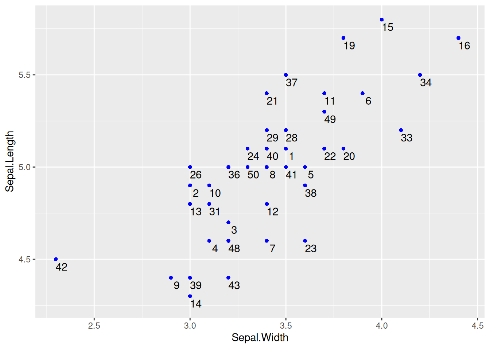

# Install packages
if (!requireNamespace("ggplot2", quietly = TRUE)) {
install.packages("ggplot2")
}
if (!requireNamespace("ggpmisc", quietly = TRUE)) {
install.packages("ggpmisc")
}
if (!requireNamespace("ggpubr", quietly = TRUE)) {
install.packages("ggpubr")
}
if (!requireNamespace("ggExtra", quietly = TRUE)) {
install.packages("ggExtra")
}
if (!requireNamespace("geomtextpath", quietly = TRUE)) {
install.packages("geomtextpath")
}
if (!requireNamespace("plotly", quietly = TRUE)) {
install.packages("plotly")
}
if (!requireNamespace("dplyr", quietly = TRUE)) {
install.packages("dplyr")
}
# Load packages
library(ggpmisc)
library(ggplot2)
library(ggpubr)
library(ggExtra)
library(geomtextpath)
library(plotly)
library(dplyr)Scatter Plot
A scatter plot is a basic visualization chart used to represent the general trend of the dependent variable changing with the independent variable.
Example

The basic scatter plot above can intuitively show the general trend of the dependent variable y changing with the independent variable x. It can be seen that y generally increases with the increase of x.
Setup
System Requirements: Cross-platform (Linux/MacOS/Windows)
Programming Language: R
Dependencies:
ggplot2,ggpmisc,ggpubr,ggExtra,geomtextpath,plotly,dplyr
Data Preparation
Using R’s built-in dataset iris and the NCBI GSE243555 dataset
# 1.Load iris data
data <- iris
# 2.Load gene expression data (first two rows)
data_counts <- read.csv("https://bizard-1301043367.cos.ap-guangzhou.myqcloud.com/GSE243555_all_genes_with_counts.txt", sep = "\t", header = TRUE, nrows = 10)
axis_names <- data_counts[c(1, 2), 1] # Save names
data_counts <- data_counts %>%
select(-1) %>% # Remove first column
slice(1:2) %>% # remain the first two rows
t() %>% # Transpose
as.data.frame() %>%
setNames(c("V1", "V2")) # Set column names
head(data_counts) V1 V2
MCF7.HG..1. 2905 178
MCF7.HG..LG..2. 2496 161
ADIPO.HG..2. 1802 184
ADIPO.HG..LG..2. 1400 174
MCF7...ADIPO..HG..2. 2180 154
MCF7...ADIPO..HG..LG..2. 2123 118Visualization
1. Basic Plotting
Figure 1 is a basic scatter plot, which can be drawn by calling geom_point().
# Basic plotting
p <- ggplot(data, aes(x = Sepal.Width, y = Sepal.Length)) +
geom_point()
p
2. Set Point Style
Figure 2 has changed the shape, size, and color style of the points based on the basic scatter plot.
# Set the shape, size, and color parameters in `geom_point`
p <- ggplot(data, aes(x = Sepal.Width, y = Sepal.Length)) +
geom_point(shape = 17, size = 1.5, color = "blue")
p
Tip
Key Parameters: shape
shape is the shape of the point, with optional values ranging from 0 to 25, and the specific shapes are shown in the following figure:

3. Multi-class Data Plotting, Change Legend Position
Multi-class Data Plotting
Figure 3 uses color=Species to map the species variable to the color feature, giving different species different colors.
# Multi-class data plotting
p_multi <- ggplot(data, aes(x = Sepal.Width, y = Sepal.Length, color = Species)) +
geom_point(shape = 16, size = 1.5)
p_multi
Tip
Key Parameters: color=Species
Here, the Species variable is mapped to the color feature, with different Species groups having different color. You can also map variables to multiple features, such as alpha=Species (mapping the species variable to the transparency feature, meaning the three types of data points will have different transparencies), shape=Species (mapping the species variable to the shape variable), and so on.
Map Categorical Variables to other Features
Figure 4 maps the species variable to both color and shape, with different species having different colors and shapes.
## Map categorical variables to other features
p_multi <- ggplot(data, aes(
x = Sepal.Width, y = Sepal.Length,
color = Species, shape = Species
)) +
geom_point()
p_multi
Change Legend Position
Figure 5 places the legend in the blank space of the chart, making it more aesthetically pleasing.
## Map categorical variables to other features
p_multi <- ggplot(data, aes(
x = Sepal.Width, y = Sepal.Length,
color = Species, shape = Species
)) +
geom_point() +
# use `theme()` to change the legend position
theme(legend.position = "inside", legend.position.inside = c(0.87, 0.8))
p_multi
Tip
Key Parameters: theme
legend.position：
Set the position of the legend, with options including “none”, “left”, “right”, “bottom”, “top”, “inside”.
legend.position.inside：
The legend.position="inside" is effective only when it is set. The general form is legend.position.inside=c(x,y), where x and y are numerical values, both ranging from 0 to 1. The larger the x value, the more the legend is positioned to the right; the larger the y value, the higher the legend is positioned. Adjustments can be made according to the actual blank space.
4. Add Point Labels
geom_text() for Point Labels
Figure 6 uses geom_text() to draw point labels.
# Basic plotting and point labels
# To ensure that the points do not overlap, only the data with the species "setosa" was selected for plotting
p <- ggplot(data = data[data$Species == "setosa", ], aes(x = Sepal.Width, y = Sepal.Length)) +
geom_point(shape = 16, size = 1.5, color = "blue") +
geom_text(
label = rownames(data[data$Species == "setosa", ]),
nudge_x = 0.03, nudge_y = -0.04,
check_overlap = T
)
p

geom_text() for Point Labels
Tip
Key Parameters: geom_text
label:
The label content displayed on the chart can be column names or other features.
nudge_x,nudge_y:
Centered on each point, nudge_x and nudge_y represent the deviation from this center point, and adjustments are made to place the labels in the optimal position.
check_overlap：
A boolean value, when true, will avoid overlap, but some point labels may not be displayed; when false, it will not check if the points overlap.
geom_label() for Point Labels
Figure 7 uses geom_label() to draw point labels.
# `geom_label` can also be used to draw point labels, and the parameters can remain unchanged.
p <- ggplot(data = data[data$Species == "setosa", ], aes(x = Sepal.Width, y = Sepal.Length)) +
geom_point(shape = 16, size = 1.5, color = "blue") +
geom_label(
label = rownames(data[data$Species == "setosa", ]),
nudge_x = 0.025, nudge_y = -0.04, size = 2.5
)
p
geom_label() for Point Labels
5. Regression Curve and Regression Equation/Correlation Coefficient
Draw Regression Curve
Figure 8 introduces a regression curve using geom_smooth(), which is a common form in articles.
# Draw regression curve
p <- ggplot(data_counts, aes(x = V1, y = V2)) +
geom_point() +
geom_smooth(method = "lm", formula = y ~ x, se = T, color = "red")
p
Tip
Key Parameters: geom_smooth
method:
The method for drawing the regression curve can be chosen, with the default method=NULL. Options include “lm”, “glm”, “gam”, “loess”, or a custom function.
formula:
The formula used for drawing the regression curve can be chosen, with the default formula=NULL. Options include y ~ x, y ~ poly(x, 2), y ~ log(x), etc.
se:
The Boolean value, where TRUE indicates displaying the confidence interval, with the default se = TRUE.
Add Regression Equation
Figure 9 has annotated the regression equation, R-squared, p-value, and other information in the upper left corner.
# Draw regression curve
p <- ggplot(data_counts, aes(x = V1, y = V2)) +
geom_point() +
geom_smooth(method = "lm", formula = y ~ x, se = T, color = "red") +
# Add the regression equation, eq: equation, R2: R-squared, P: p-value
stat_poly_eq(use_label("eq", "R2.CI", "P"), formula = y ~ x, size = 4, method = "lm")
p
Tip
Key Parameters: use_label
The types of labels to be added, “eq”, “R2”, “P” represent the equation of the regression equation, the R-squared value, and the p-value, respectively. There are also other optional values such as “R2.CI” (displaying the 95% confidence interval) and “method” (displaying the method).
Adjust the Position of the Regression Equation Label
Figure 10 used the label.y and label.x parameters to adjust the label position as needed.
## Adjust the label to a suitable position
p <- ggplot(data_counts, aes(x = V1, y = V2)) +
geom_point() +
geom_smooth(method = "lm", formula = y ~ x, se = T, color = "red") +
stat_poly_eq(use_label("eq"),
formula = y ~ x, size = 4, method = "lm",
label.y = 0.45, label.x = 0.5, angle = -5
)
p
Plotting Multi-class Data with Regression Equations
Figure 11 uses multiple types of data for plotting and adds regression curves and their labels.
# Multi-class plotting with regression equations
p_multi <- ggplot(data, aes(x = Sepal.Width, y = Sepal.Length, color = Species, shape = Species)) +
geom_point(size = 1.5) +
scale_colour_manual(values = c("setosa" = "purple", "versicolor" = "blue", "virginica" = "pink")) +
theme(legend.position = "inside", legend.position.inside = c(0.87, 0.8)) + # Set the legend position
geom_smooth(method = "lm", formula = y ~ x, se = T) +
stat_poly_eq(use_label("eq"),
formula = y ~ x, size = 3.5, method = "lm",
label.x = c(0.6, 0.6, 0.6), label.y = c(0.2, 0.6, 0.75), angle = 10, color = "black"
)
p_multi
Display Correlation Coefficient
Figure 12 uses the stat_cor() function to display the correlation coefficient label.
# Display correlation coefficient
p <- ggplot(data_counts, aes(x = V1, y = V2)) +
geom_point() +
geom_smooth(method = "lm", formula = y ~ x, se = T, color = "red") +
stat_cor(
method = "pearson", label.sep = ",",
p.accuracy = 0.00001, r.digits = 5, size = 4
)
p
Tip
Key Parameters: stat_cor
method:
The method for calculating the correlation coefficient, which can be chosen from “pearson” (default), “kendall”, or “spearman”.
label.sep:
The delimiter for labels, defaulting to “,”.
r.accuracy,p.accuracy:
The precision of the R value or P value.
r.digits,p.digits：
The number of significant digits for the R value or P value.
6. Add Labels to Regression Curve
single-type Data Plotting with Label
Figure 13 uses geom_labelsmooth() to add labels to the regression curve.
## Draw the regression line and add labels
p <- ggplot(data[data$Species == "setosa", ], aes(x = Sepal.Width, y = Sepal.Length)) +
geom_point(shape = 16, size = 2, color = "blue") +
geom_labelsmooth(aes(label = Species[1]),
fill = "white",
method = "lm", formula = y ~ x,
size = 6, linewidth = 1,
boxlinewidth = 0.6, linecolour = "red"
)
p
Tip
Key Parameters: geom_labelsmooth
label：
Label name.
fill：
Box fill color.
linewidth:
Line thickness.
boxlinewidth:
The thickness of the box border.
Multi-class Data Plotting with Labels
Figure 14 adds label to multiple types of data accordingly.
# Multi-class data plotting with labels
p <- ggplot(data, aes(x = Sepal.Width, y = Sepal.Length, color = Species, shape = Species)) +
geom_point(size = 2) +
theme(legend.position = "none") +
geom_labelsmooth(aes(label = Species),
fill = "white",
method = "lm", formula = y ~ x,
size = 3, linewidth = 0.6, boxlinewidth = 0.3
)
p 
7. Add Marginal Rug Plots
Figure 15 uses geom_rug() to add marginal rugs.
p <- ggplot(data, aes(x = Sepal.Width, y = Sepal.Length)) +
geom_point(shape = 16, size = 1.5, color = "blue") +
geom_rug(color = "steelblue", alpha = 0.1, linewidth = 1.5)
p8. Add Marginal Distributions
Figure 16 introduces the marginal distribution of histograms, and multiple parameters can be used to adjust the style of the marginal plots.
# Add marginal distributions
p <- ggplot(data, aes(x = Sepal.Width, y = Sepal.Length)) +
geom_point(shape = 16, size = 1.5, color = "blue")
p
p1 <- ggMarginal(p,
type = "histogram", color = "red", fill = "green",
margins = "both", xparams = list(bins = 12, fill = "purple")
)
p1
Tip
Key Parameters: ggMarginal
type:
The type of marginal distribution plot, with options including “density”, “histogram”, “boxplot”, “violin”, “densigram”.
margins:
Set which edge to draw the marginal distribution plot, margins=c(x,y) indicates that marginal plots are drawn on both the x and y edges.
xparams,yparams：
Set the side plot to be effective only for the x or y dimension. The parameters include common parameters such as color, fill, and size, as well as unique parameters for this marginal plot, such as the bins for histograms.
bins:
Like the histogram parameter bins, divide the histogram into several bars.
9. Draw 3D Interactive Scatter Plot
Figure 17 uses three columns of data and supports interactive browsing.
## 3D Interactive Scatter Plot.
p <- plot_ly(data,
x = ~ data$Sepal.Length, y = ~ data$Sepal.Width,
z = ~ data$Petal.Length, color = ~ data$Species,
colors = c("#FF6DAE", "#D4CA3A", "#00BDFF"),
marker = list(size = 5)
) %>%
add_markers() # Add the above chart to the `plotly` visualization
pApplications

The figure shows that KRT6B expression is positively correlated with immune-related genes (including CXCL9 and CXCL10). [1]

The figure shows that in the brown and dark blue modules, there is a strong positive correlation between module members and gene importance (cor=0.78&p<0.001, cor=0.59&p<0.001). [2]

The figure explores the association between CXCR4 and various immune cells. [3]
Reference
[1] Song Q, Yu H, Cheng Y, et al. Bladder cancer-derived exosomal KRT6B promotes invasion and metastasis by inducing EMT and regulating the immune microenvironment[J]. J Transl Med, 2022,20(1):308.
[2] Xie J, Chen L, Wu D, et al. Significance of liquid-liquid phase separation (LLPS)-related genes in breast cancer: a multi-omics analysis[J]. Aging (Albany NY), 2023,15(12):5592-5610.
[3]Zhang S, Hou L, Sun Q. Correlation analysis of intestinal flora and immune function in patients with primary hepatocellular carcinoma[J]. J Gastrointest Oncol, 2022,13(3):1308-1316.